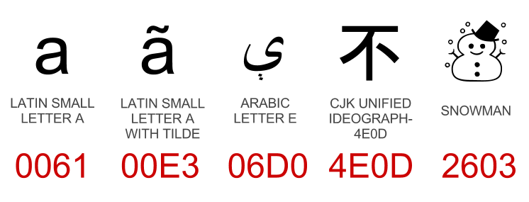
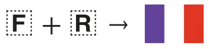

Why
One encoding covering most of the world’s writing systems. Standard encoding of the web, most operating systems, Java and .NET.
Before Unicode, each script (or script family) had its own encoding, or worse, lots of different incompatible encodings. Unicode is a superset of almost all of them, so can be used for interchange.
It’s been around for over 30 years.
Note: code examples are Perl-centric so far, because it has really good Unicode support and I know it; if you have examples for other languages, please do post a comment!
What

Unicode defines a code point (number) for every character, such as a, ã, ې, 不 and ☃. As of Unicode 6.2 there are 109,976 code points! (You can mouseover any highlighted character for more information.)
It also includes combining characters such as ◌̀ which can be added to other characters; this way, Unicode does not need a code point for every possible combination of letter and accent. On the other hand, Unicode generally doesn’t care about fonts or stylistic differences: it gives and the same codepoint.
It’s more than just a character set: it also covers standard encodings such
as UTF-8;
Normalization
For compatibility with other encodings Unicode sometimes includes precomposed versions of characters, for example, these three:
- Å LATIN CAPITAL LETTER A WITH RING ABOVE (U+00C5)
- Å ANGSTROM SIGN (U+212B)
- A LATIN CAPITAL LETTER A (U+0041) + ◌̊ COMBINING RING ABOVE (U+030A)
For these to be treated as the same string in equality tests etc. you should run all input through Unicode normalisation. The most common form is NFC, which uses preComposed characters where possible, and defines a strict ordering of diacritics if more than one exists. NFD Decomposes characters where possible.1
It doesn’t matter what form you use as long as you are consistent; NFD is faster in general (fewer codepoints) and tchrist suggests running input through NFD and output through NFC.
Compatibility decomposition also maps characters such as ffi, Ⅸ and even ⁵ to ‘ffi’, ‘IX’ and ‘5’ respectively. This NFKC normalisation helps when searching for text.
#!/usr/bin/perl use Unicode::Normalize; my $norm = NFD($str);
#!/usr/bin/python import unicodedata norm = unicodedata.normalize('NFC', string)
#!/usr/bin/ruby # gem install unicode_utils require "unicode_utils/nfc" norm = UnicodeUtils.nfc(string)
Casefolding
Casing is not so simple in the Unicode world:
-
Some strings actually change length when they change case: ß uppercases to ‘SS’.
-
ſ LATIN SMALL LETTER LONG S should be seen as equal to ‘s’ and ‘S’ in case-insensitive comparisons.
-
Σ GREEK CAPITAL LETTER SIGMA has two lowercase forms: σ at the beginning or middle of the word, and ς at the end of a word.
-
Casing is mostly consistent across locales, but Turkish is an exception: it has both a Dotted and dotless I, in both lower and upper cases.
To ensure your code handles these cases, and any new ones, Unicode provides a one-way ‘casefold’ operation that allows case-insensitive comparison:
#!/usr/bin/perl use Unicode::CaseFold; # or: use v5.16; sort { fc($a) cmp fc($b) } @stuff;
Casefolding does not include normalization, so do that too.
Sorting
Sorting (or collation) is locale specific and just as riddled with pecularities as casing:
-
German and Swedish both have ä and ö but sort them differently - German treats them as variants of the same letters without umlauts (i.e. ‘aäbcdefghijklmnoöpqrstuvwxyz’) whereas Swedish considers them new letters, and puts them at the end (‘abcdefghijklmnopqrstuvwxyzäö‘)
It’s important that things are sorted in the order the user expects.
-
Sorting varies by application too; phonebooks are often sorted differently to book indices, for example.
-
For Chinese characters and other ideographs, there are many possible orders, e.g. pinyin (phonetic), by stroke count, etc.
-
Collations can be tailored based on user preferences, e.g. lower or upper-case first?
It’s not enough to just sort by binary comparison. And codepoints aren’t generally in any sensible order either. Fortunately Unicode specifies a Collation Algorithm that is immensely customisable, covers all the edge-cases, and does clever things to make it reasonably fast. Here’s an example:2
#!/usr/bin/perl use Unicode::Collate::Locale; my $collator = Unicode::Collate::Locale->new(locale => 'DE'); my @sorted = $collator->sort(@array); $collator->cmp($word, $another_word); # -> -1, 0 or 1
The UCA can do other clever things, such as sort ‘10’ after ‘2’ numerically, or sort the character ‘?’ as if it was the string ‘question mark’.
Encodings
The big ones are UTF-8, UTF-16 and UTF-32. Each one guarantees a reversible
mapping of almost every codepoint3 to a byte sequence.
-
UTF-32 is dead simple: each codepoint gets four bytes. Takes up tons of space, not recommended for interchange.
-
UTF-8 is very common the web. It’s byte-oriented (no endianness issues), handles corruption well, is ASCII-compatible and takes up minimal space for text that is mostly ASCII (e.g. HTML).
-
Code points between U+0800 and U+FFFF, which includes commonly used CJKV characters, will take up 3 bytes instead of 2. So UTF-16 may be more space efficient.
-
ASCII-compatibility is helpful to allow UTF-8 to stealth its way through scripts and processes that are not Unicode-aware. But if such a system tries to do anything with the data (casing, sub-strings, regex), that data may be corrupted.
-
-
UTF-16 is used by Java, .NET and Windows. It uses 2 bytes (16-bit) to represent the most common 63K codepoints, and 4 bytes for the less common 1M codepoints (using two ‘surrogate’ codepoints).
-
Contrary to popular belief, UTF-16 is not a fixed-width encoding. But as long as it contains no surrogates, it can be treated as one, which can speed up string operations.
-
UTF-16 streams typically begin with U+FEFF4 to detect the endianness (byte order) of the stream. Otherwise, you can explicitly encode or decode via ‘UTF-16BE’ or ‘UTF-16LE’ to specify the endianness.
-
Unicode and internationalised domain names
International characters create a big problem for domain names. Just as I and l look similar, Unicode multiplies that problem by 1,000, in addition to adding numerous invisible control characters, spacing characters and right-to-left text.
Browsers and registrars have implemented several measures against this:
- Many TLDs restrict which characters can be used in domain names.
- Browsers may display the domain in Punycode (see below) if the domain includes characters from multiple scripts and/or characters not belonging to one of the user’s preferred languages.
- Internationalised country codes such as .рф (Russia) only accept Cyrillic names.
nameprep/stringprep
RFC 3491 defines nameprep, a mechanism to case-fold, normalize and sanitize strings before they can be used in domain names. This removes many invisible characters and throws an error if prohibited code points are in use.
It is implemented in terms of a wider framework called stringprep. In Perl, one can use Net::IDN::Encode which will also perform Punycode conversion.
Punycode
For legacy reasons DNS does not allow extended characters outside of ASCII, so Punycode
is an ASCII-compatible encoding scheme. For example, café.com becomes xn--caf-dma.com.
All Punycode-encoded domain components are instantly recognisable by their xn-- prefix.
This goes for TLDs too: .中国 is really known as xn—fiqs8s.
The problem of ‘user characters’
In Perl at least, everything (substr, length, index, reverse…) works on the level
of codepoints. This is often not what you want, because what a user considers to be a
character such as ў is actually two codepoints (y + ◌̆). Here’s a really good
usenet post on the subject.
Even seemingly innocuous things like printf "%-10s", $str breaks completely for combining characters,
double-width characters (e.g. Chinese/Japanese) or zero-width characters.
Fortunately Perl provides the \X regular expression metachar which matches exactly one
‘extended grapheme cluster’, i.e. what a user would consider a character to be. A more robust
solution is to install Unicode::GCString:
#!/usr/bin/perl use Unicode::GCString; use Unicode::Normalize; use utf8; use open qw(:std :encoding(UTF-8)); my $s = NFD("crème brûlée"); # ensure combining marks get their own codepoint my $g = Unicode::GCString->new($s); print $g->length, "\n"; # 12, not 15 print reverse(@$g), "\n"; # 'eélûrb emèrc', not 'éel̂urb em̀erc' print $g->substr(0,5), "\n"; # 'crème', not 'crèm' print $g->substr(0,3), "\n"; # 'crè', not 'cre' print "1234512345123451234512345|\n"; printf "%s%*s|\n", $g, (25 - $g->columns), ''; # 25 columns long (ᵔᴥᵔ) printf "%-25s|\n", $s; # 22 columns long (╯°□°）╯︵ ┻━┻
Line breaks
Line breaking (or word wrapping) is another thing that becomes insanely complicated
once Unicode is involved. You have to account for various non-breaking and breaking control
and spacing characters, punctuation in every language (e.g. « and » quotes, or the
full stop or comma being used in numerics such as 2,140) and the width of each character.
In Perl, this has all been handled for you - just use Unicode::LineBreak.
Regular expressions
Some useful Perl regular expression syntax:
\R- Match any Unicode linebreak sequence (including
\n,\r\nand six others) \p,\P- Match any codepoint possessing (or not possessing) a Unicode property.
- Common ones are
\pL(Letter),\pU(Uppercase),\pS(Symbol), or even\p{script=Latin},\p{East_Asian_Width=Wide},\p{Numeric_Value=4}. - See perluniprops for a big list.
- Built-in character classes such as
\w,\b,\sand\dare Unicode-aware since Perl 5.6 (though you need to make sure your string or pattern has theUTF8flag on!) Disable this with the/aflag (see perlre). \X- Match an extended grapheme cluster, which is basically a user-visible ‘character’.
- Use it instead of
.unless you want codepoints. -
E.g. to match a vowel with optional diacritics or marks (source):
my $nfd = NFD($string); $nfd =~ / (?=[aeiou]) \X /xi;
Trivia
Filesystems
When you use Unicode strings as file or directory names, all bets are off. What encoding do you use? What API do you use? (Windows has two, one speaks Unicode, the other tries to use locale-dependent encodings). Some filesystems perform normalization such as NFD on file names, such as Mac OS X; this may be an issue if your platform doesn’t understand decomposed Unicode.
In summary, consult docs and test your assumptions.
Han Unification
Han characters are a common feature of Chinese, Japanese (kanji) and historical Korean and Vietnamese. Many have a distinct visual appearance depending on the script, but Unicode unifies them as a single codepoint for simplicity and performance reasons (examples).
This caused controversy because the visual form of a character can be meaningful; users may not be shown their national variant but rather some other country’s version. In some cases they can look very different (e.g. 直). Just as Western names vary (e.g. ‘John’ or ‘Jon’) Japanese names may use specific glyph variants that Unicode does not provide, so people cannot actually write their own name the way they’d prefer!
In practice, users select a typeface that renders glyphs in the style they want, be that Japanese or Chinese. Variation Selectors (see below) are another solution to the problem.
For political and legacy reasons (compatibility with older character sets), Unicode does not attempt to unify simplified and traditional Chinese.
Emoji
Version 6.0 of Unicode adds 722 ‘emoji’ characters, which are emoticons used mostly on Japanese phones, but recently in Mac OS X (Lion), Gmail, iPhone and Windows Phone 7. Some fonts may choose to render them as full-colour emoticons; some may not support them at all.
Emoji is the reason why Unicode includes 🏩 LOVE HOTEL and 💩 PILE OF POO. (If you can’t see them, install Symbola, or click the fileformat.info link for a picture).
Regional Indicator symbols

Unicode 6.0’s emoji introduced symbols for many country flags, but not all of them. As an alternative, the range U+1F1E6..U+1F1FF defines symbols from A to Z. If two symbols from this range form an ISO-3166-1 country code (e.g. ‘FR’ for France), the renderer may choose to display it as a flag instead!
Variation Selectors
Variation Selectors are codepoints that change the way the character before them is rendered. There are 256 and they occupy the ranges U+FE00..U+FE0F and U+E0100..U+E01EF plus U+180B, U+180C and U+180D.
They are essential for the Mongolian script, which has different glyph forms depending on its position in the word, the gender of the word, what letters are nearby, whether or not the word is foreign, and modern vs. traditional orthography (details).
It is anticipated that these will be used to offer variations of glyphs unified by Han Unification.
They are also used for somewhat more esoteric things, such as serif versions of mathematical operators.
-
Gory details: http://www.macchiato.com/unicode/nfc-faq. ↩
-
See Unicode::Collate::Locale for a full list of locales. ↩
-
Except surrogates. ↩
-
Although it is called ‘ZERO WIDTH NO-BREAK SPACE’, it is more appropriate to use U+2060 WORD JOINER. ↩

Comments !